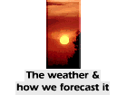
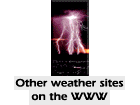

[About The Met. Office]
[The weather & how we forecast it]
[The latest weather]
[Weather services to help you...]
[Research, development & operations]
[Other weather sites]
[Enquiries & complaints]
[Comments about our site]
WWW site manager: James Barrott - jdbarrott@meto.govt.uk